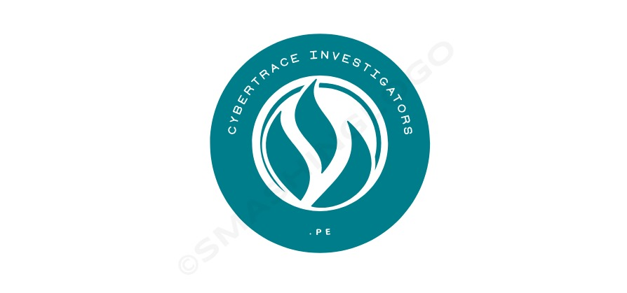

CyberTrace se fundó en el año 2015 para ayudar y
transladar conocimiento sobre la
ciberseguridad a las personas que se conectan día a día en Internet.
Somos una empresas líder en el campo de la recuperación
de datos y la forense digital,
nuestra sede se encuentra en Lima y este se ha
convertido en un referente
internacional en la industria de la seguridad cibernética
y la gestión de datos críticos.